硬件设计
Update history
| Date | Version | Author | Update content |
|---|---|---|---|
| 2024-12-05 | 1.0.1 | 老怪鸽 | 更新了基本文档 |
整体原理图
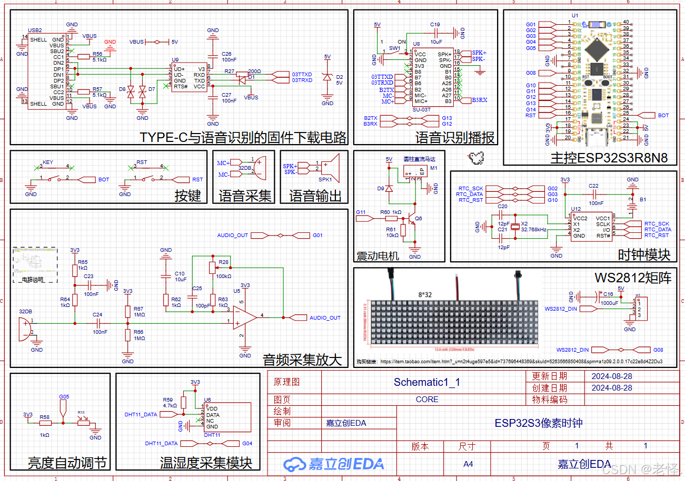
硬件设计
电源部分
第一版时，使用 FM5324G 作为控制。它是一个集成了锂电池充电管理，电池5V升压输出，电池电量判断和 LED 电量指示的集成电源管理 IC。
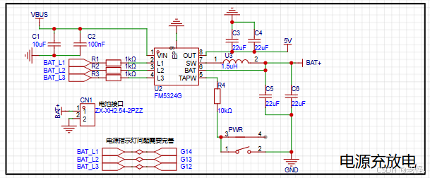
但是发现使用一个800mAh的电池，开个10分钟就没电了，直接舍弃电源管理部分，直接通过TYPE-C接口进行供电。
当前版：
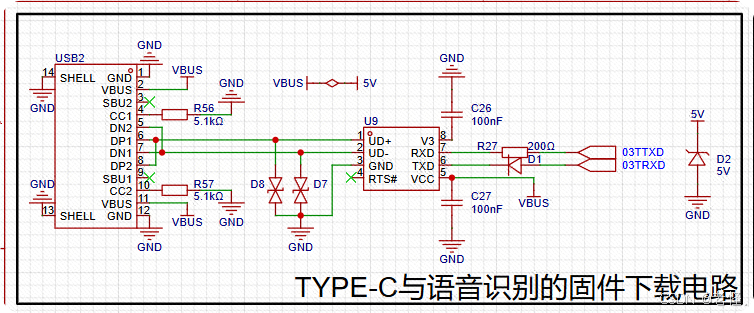
首先，因为语音模块需要有一个下载设备，这里直接将TYPE-C接口的数据接口接到了一个CH340N（图中的U9，编号C2977777）的器件上。接下来对各个器件进行说明。
- R56和R57是USB协议上要求的，必须是5.1K，涉及到PD诱骗电压输出，具体原因自行百度。
- D8和D7是ESD保护器件，防止静电的，防止静电损坏后级设备，也可以不用这些器件。
- VBUS通过一个短接符号连接到了5V，说明这个TYPE-C输入的是5V，是我的个人习惯，通常可以直接在USB处标记5V。
- U9就是之前说的CH340N，看数据手册，是一个将USB 转串口的芯片，而我们的语音识别模块就是通过串口下载。
- C26和C27，首先是C26，在CH340N的数据手册中指出：当CH340N的电压输入为5V时，必须在V3引脚处外接一个100nf的电容；VCC处尽量加一个100NF的电容。
- R27和D1，根据CH340N的厂家说明，为了防止与CH340N通信的设备，通过RXD和TXD引脚将电压反充给CH340，建议在RXD引脚上接入一个限流电阻，TXD上接一个反向二极管，防止电流电压倒灌。
- D2也是一个ESD器件，防止类似雷击，静电等导致的瞬间高压损坏设备，加入ESD器件后，可以有效防止瞬间的高压将设备烧毁。
总结：就是一个通过USB供电的同时，还可以通过USB给语音模块下载语音识别的固件
主控部分
使用立创开发板的立创·ESP32S3R8N8开发板。
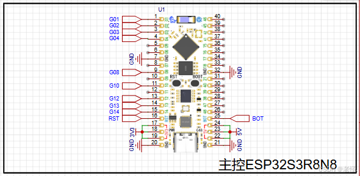
没啥好说的，就是给开发板供电5V就好，开发板上有LDO，输入5V后开发板会输出3V3。这里需要注意，我就是BOT引脚用来接了按键，方便在调试出现故障时，也可以通过进入升级模式，擦除内存。
RTC时钟部分
使用常见的一个RTC时钟模块DS1302。特点如下：
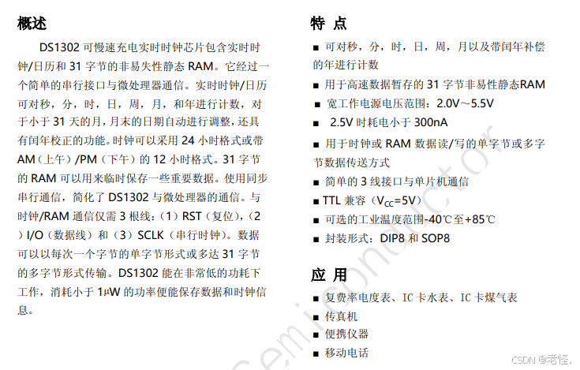
原理图设计
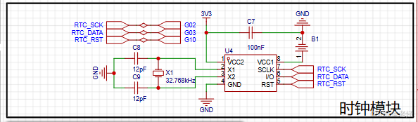
DS1302需要外部接一个32.768KHz的晶振作为时钟，就是图中的X1器件。而晶振为了更加的稳定精确，需要在晶振的输入输出加上负载电容，根据那个晶振的手册说明，加了12pf的负载电容，就是图中的C8C9。VCC1是备用电池的电源输入口，如果想要在设备断电的情况下，DS1302还能够跑时，那么必须接入这个B1电池座，这个电池座是接的纽扣电池。C7单纯是滤波用。DS1302的其他引脚就是控制引脚了，将其接到开发板引脚上，方便开发板控制。
温湿度采集部分
又是使用常见的一个温湿度传感器DHT11。特点如下：
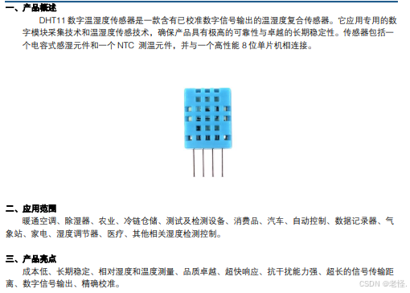
原理图设计
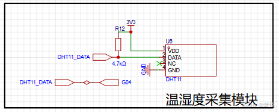
DHT11在数据引脚DATA上，必须加一个上拉电阻，让DHT11在空闲时保持高电平。根据它的数据手册，这个上拉电阻就选择了4.7K的R12。然后DHT11是支持3.3V~5V的电压输入的，这里因为开发板是3V3的GPIO电压，所以为了通信稳定，给DHT11的数据引脚DATA的也保持3.3V，给DHT11的输入电压为3.3V。
WS2812彩灯矩阵部分
这里购买的是淘宝上卖36元的 32 * 8 像素的彩灯矩阵：WS2812B全彩软像素屏8X8 8X32 16X16幻彩5V显示可编程像素软屏
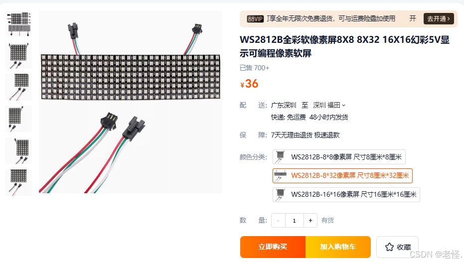
原理图设计：
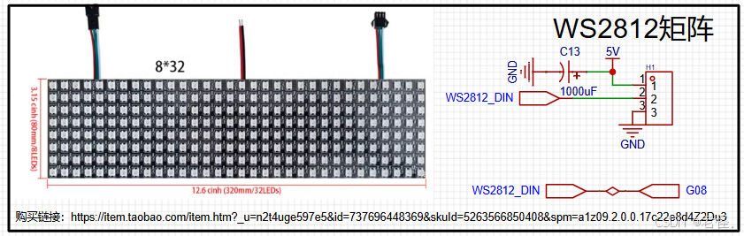
WS2812是一个单总线的设备，每一个灯珠里面都带了驱动电路，可以同时控制很多个灯，但是为了以防万一，在这个WS2812彩灯矩阵的电源输入口VCC处，加了一个1000UF的电容，防止彩灯矩阵亮的瞬间电压电流不足，加了电容之后，如果出现电压电流不足的情况下，就可以从这个大电容取电。
音频采集部分
关于模拟信号类我不太了解，这里是参考的一个音频采集模块的电路：MAX4466音频采集模块，感兴趣的朋友直接上淘宝搜索就好。
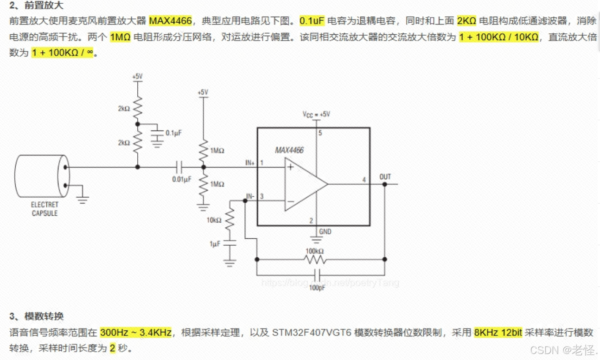
原理图设计：
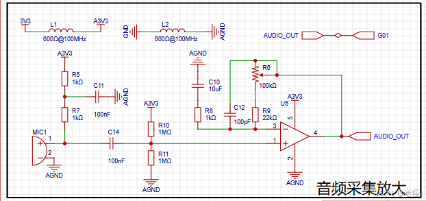
按键部分
在软件部分当中使用一个按键去控制UI界面的切换。但是当前我虽然用上了按键，结果我的外壳部分没有做好，导致我现在切换界面的拆开外壳去按按键... 大家等我完善或者复刻的时候自行完善就好。
原理图设计：
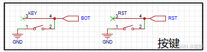
外壳部分
下载地址：https://gitee.com/laoguaige/esp32-s3-r8-n8-pixel-clock/tree/master/3Dfile
3D文件说明
因为实物很大，打印的外壳需要分开，分左右两边。
LEDGrid2x.stl 为光栏，需要一个部件打两个，拼到一起；
说明：光栏一定要黑色的材质，不管是3D打印时选择黑色的材料还是后面收到喷黑漆，一定记得使用黑色的光栏！不然观感就差很多
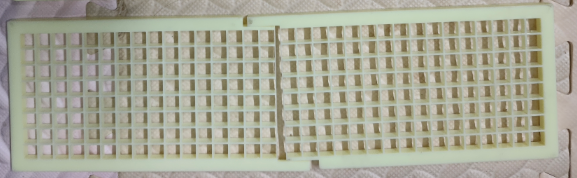
frontFrame2x.stl 为外壳边框，需要一个部件打两个，拼到一起；
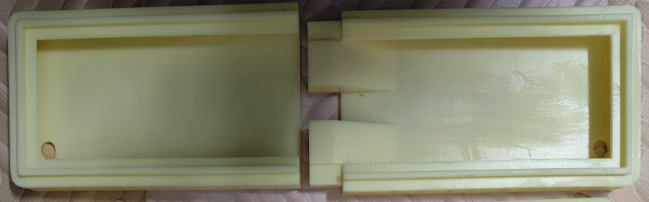
Housing.stl 和 Housing_noV.stl 为同一个部件，选择一个进行打印即可，都是成本较高，酌情打印；
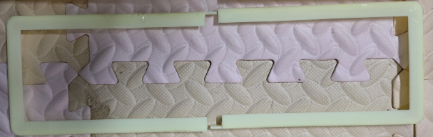
如要组建完整的外壳，还需要购买黑色的亚克力透明面板！
生产的规格参数：黑茶色 透明亚克力 95×330×2mm
项目展示
静态图
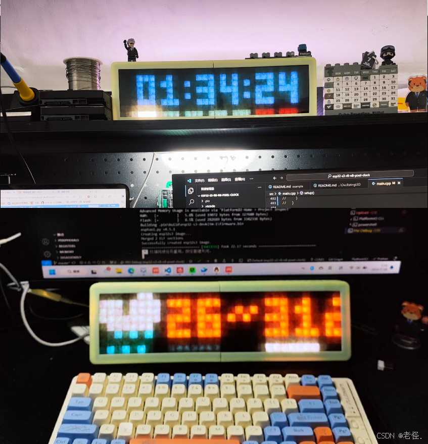
动态图
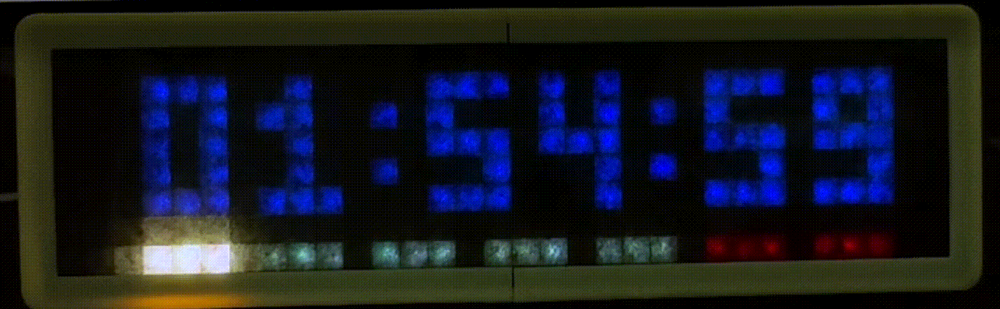
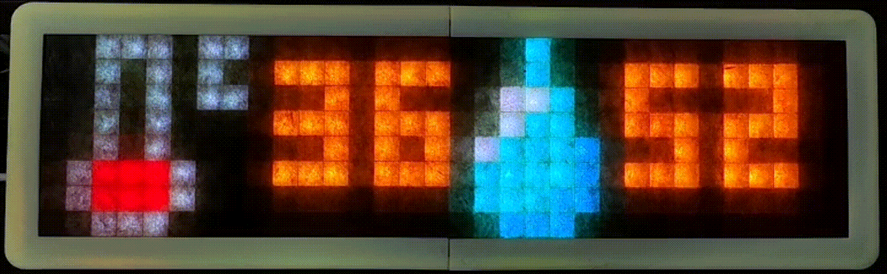
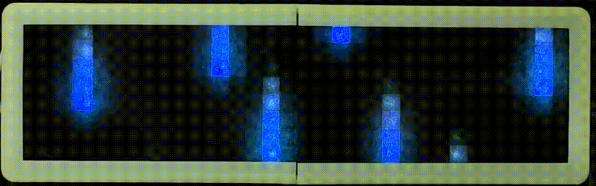
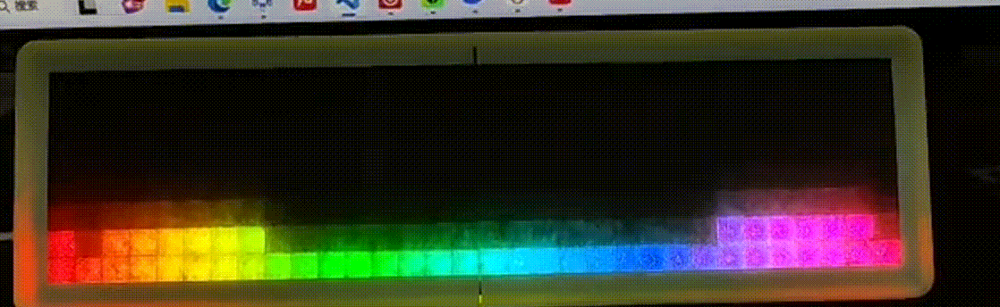